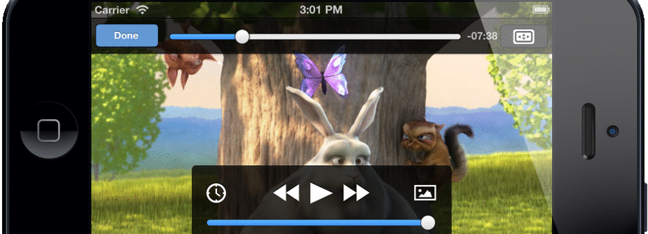

VideoLAN, a project and a non-profit organization.
VLC reaches 2.1.1
VLC 2.1.1 is the first minor version of our popular media player "Rincewind".

Faster Video decoding
New Audio Core
Advanced Subtitles
Android and iOS ports
libVLC sdk is now LGPL!
2.1.1 Highlights
With the capabilities of "RinceWind", 2.1.1 allows experimental decoding of HEVC and Webm/VP9 (depending on the platform).
2.1.1 fixes around a hundred of bugs, notably numerous regressions introduced in "RinceWind".
Important fixes involve Speex, WMV3, Alac and AVI decoding, but also numerous Mac OS X crashes
and GPU decoding on Windows.
2.1.1 also improves the Windows installer and updates most translations.
Read the Changelog

Features
Audio
- Rewritten audio core, allowing better volume and device management.
- Rewrite of the audio modules, to adapt to the new core.
- Correct support for multi-channel layouts in all formats: 5.1, 6.1 and 7.1
- New audio outputs for Windows Vista, Android, iOS, OpenBSD and OSSv4.
- New remapping, gain, stereo widening, downmixing effects.
- Higher samplerate, precision, live configuration in the core.
- Numerous new audio metadata format supported.
Video
- Port the OpenGL output to OpenGL ES.
- Support color conversion shaders in glsl on Android and iOS.
- New outputs for OpenMax IL on mobile and Decklink Blackmagic.
- New video outputs for iOS using OpenGL ES2.
- Support for deinterlacing for higher bit depth and XYZ colorspace.
- New anaglyph filter for side-by-side 3D.
- 4K-ready :)
Codecs
- Add hardware decoding for OS X using VDADecoder.
- Add hardware decoding for Android using MediaCodec.
- Add hardware decoding for GNU/Linux using VDPAU.
- Add hardware encoding for Windows using Intel QuickSyncVideo.
- Support for G2M4, MSS1, MSS2, TSCC2, CDXL, Ut, VBLE video codecs.
- Support for Ulead DV audio, Indeo Audio Coder, RealAudio Lossless audio.
- Support for SCTE-27 and complete EIA-608 subtitles.
Formats
- Support for fragmented MP4, Wave/RF64 files.
- Extended metadata tags and cover art support in Ogg, AVI, MP4 and MKV.
- Support FLAC, Atrac, ADPCM, DV Type 1, 12bits DV audio in AVI.
- Extended support for AVI, MKV and MJPEG streams.
- Better recording of AVI and MKV format.
- Audio fingerprinting using AcoustID.
Input and Devices
- Support for screen input on OSX Lion and later.
- Support for Microsoft Smooth Streaming, developed by Viotech.net
- New RTMP input module, using libavformat!
- Support for VNC/rfb and Remote Desktop view-only modes.
- Important improvements on Blu-Ray, Dash, v4l2 and HTTP inputs.
- New AVFoundation OS X and shm framebuffer inputs.
For Anime Fans
- New 6.1 downmixer to 5.1 and Stereo from MKV/Flac 6.1.
- Correct YUV->RGB color matrix in the OpenGL shaders.
- Improved MKV support for seeking, and resiliancy.
- Editions support in MKV.
- Better subtitles and metadata support from MKV.
- Various ASS subtitles improvements.
For Mobile
- Port to Android, from 2.1 to 4.3, on ARMv6, ARMv7, x86 and MIPS.
- New port to iOS, from iOS 5 to 7, on all iPads and iPhones after 3GS.
- Partial port to WinRT, for Windows 8, 8.1 and WP8.
- OpenGL ES optimized outputs.
- Improvements of OpenMAX IL decoders, encoders and renderers.
- New audio, video outputs and interfaces for mobiles.
For Developers
- libVLC and most modules are now LGPLv2.1+.
- libVLC media framework can now be used in all types of applications.
- libVLC SDK packages now exists, in addition to more examples.
- Improved libVLC API, for better control.
- VLC's web plugins now support windowless mode, for smoother integration with HTML elements.
Download VLC
Windows
VLC for Windows Version 2.1.1Mac OS X
Linux
Ask your favorite packager for VLC 2.1!
Sources
Get the source!Changelog
ChangelogContact
For any questions related to this release, please contact us.